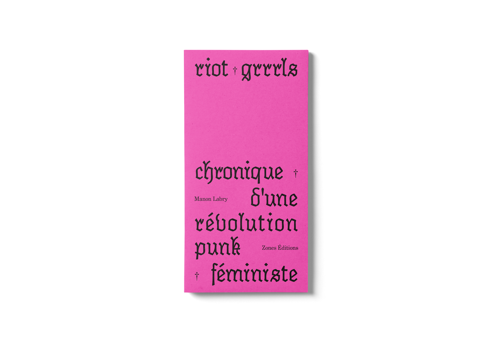
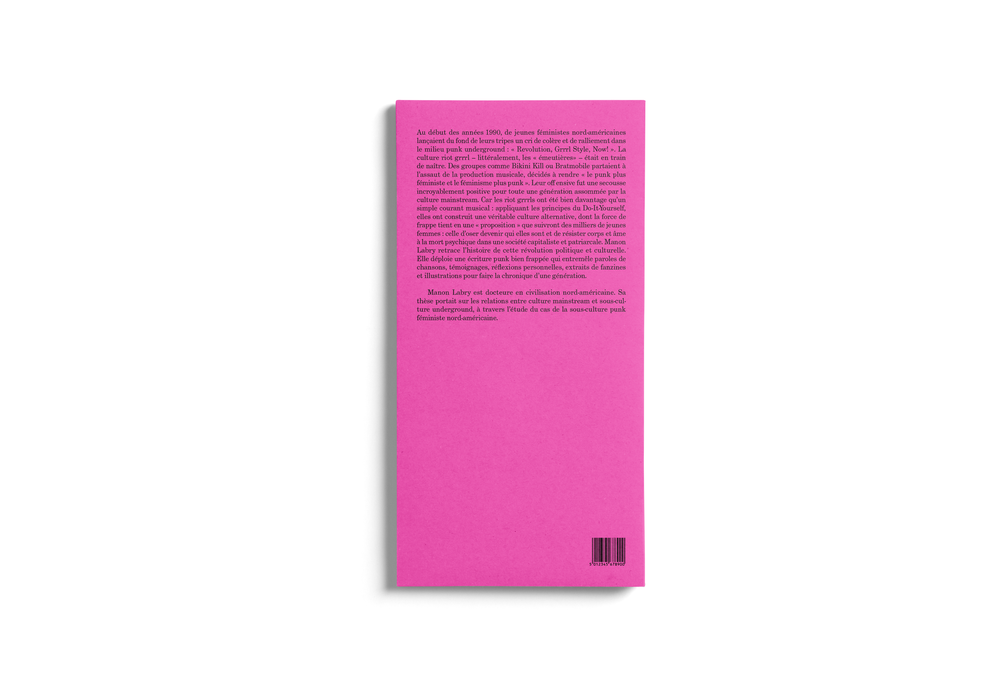

RIOT GRRRLS / BOOK DESIGN
Following a conference with studio deValence, the task was to reimagine the editorial concept of Manon Labry's essay, 'Riot Grrrls / Chroniques d’une Révolution Féministe Punk.' The result is a ComColor Inkjet printed and bound edition featuring a new layout and a full-cover design.
/ Developed at ESA St-Luc Brussels and remains an academic exercise without official publication.



